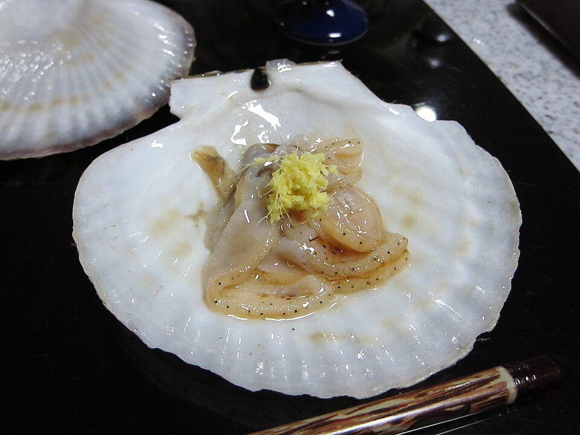

ふるさと納税の2026年版（約10万円分を使う場合のイメージ）
要点まとめ
ふるさと納税は、好きな自治体に寄附すると、寄附額から2,000円を引いた額が所得税と住民税から控除される制度です（上限あり）[2]。この記事は、会社員が年に約10万円を寄附する場合を例に、2026年の変更点と手続きの注意点をまとめました。配分例は考え方の例で、特定の自治体や返礼品をすすめるものではありません。
2025〜2026年に変わったこと
新制度・改正 ポータルのポイントがなくなった
寄附にポイントを付けるサイト経由の募集は禁止[1]
新制度・改正 自治体の経費の基準が厳しくなった
寄附のうち使える額を52.5%以上にするルールが始まった[1]
制度の規模は過去最高
2025年度の寄附は約1兆3,314億円[7]
控除の仕組みと上限の目安
控除は3つに分かれる
上限を超えなければ、自己負担は年2,000円だけ[2]
10万円が上限内に収まる年収の目安
家族構成で変わる。夫婦（配偶者に収入なし）なら725万円前後から[3]
| 家族構成 | 給与収入の目安 | その年収の上限 |
|---|---|---|
| 独身または共働き | 675万円 | 102,000円 |
| 夫婦（配偶者に収入なし） | 725万円 | 104,000円 |
| 共働き＋高校生1人 | 725万円 | 104,000円 |
| 夫婦＋高校生1人 | 775万円 | 105,000円 |
| 夫婦＋大学生・高校生 | 850万円 | 108,000円 |
自分の数字で確かめる方法
所得税率20%なら、住民税の所得割が約34万円以上
| 所得税の税率 | 必要な所得割の目安 |
|---|---|
| 5% | 約41.6万円以上 |
| 10% | 約39.1万円以上 |
| 20% | 約34.1万円以上 |
くわしく
- 所得割は、勤務先から届く住民税の決定通知書に載っている
- 計算: 98,000円×（90%−所得税率×1.021）÷20%（総務省の式から筆者が計算）[2]
- 決定通知書は前年の収入で計算されるので、収入が大きく変わった年は目安になる程度
ワンストップ特例と確定申告
ワンストップ特例の条件
寄附先が5自治体以内で、確定申告をしない人が使える[4]
確定申告が必要な人
医療費控除や住宅ローン控除の1年目がある人は、確定申告で[8]
2026年分の締め切り
12月31日までに入金が完了した寄附が2026年分[6]
10万円分の配分例
返礼品の調達費は寄附額の3割以下なので、10万円の寄附で自治体が返礼品に使う費用は最大で約3万円です[1]。以下は配分の考え方の例で、ワンストップ特例を使う前提で5自治体以内にしています（筆者の提案）。
例A：食品をバランスよく（4自治体）
米の定期便3万円＋肉2.5万円＋魚介2.5万円＋果物2万円
くわしく
- 冷凍の肉・魚介は、届く時期が重なると冷凍庫に入りきらないことがある（筆者の見解）
- 米の定期便なら、届く時期を分けられる（筆者の見解）
例B：冷凍庫が小さい家庭（4自治体）
米3万円＋日用品3万円＋常温の加工品2万円＋果物2万円

くわしく
- 紙製品などの日用品は常温で置けて、冷凍庫を使わない（筆者の見解）
- 果物は旬に合わせて届くので、日にちを選べないことが多い（筆者の見解）
例C：体験や応援に使う（3〜5自治体）
宿泊・体験5万円＋米2万円＋使い道を選ぶ寄附3万円
よくある失敗
失敗しやすい5つのこと
いちばん多いのはワンストップの無効（筆者の見解）
今回確認できなかった点
- 総務省の「全額控除される寄附金額の目安」の表がサイトから外れた理由と、2026年の税制改正を反映した新しい目安
- 2027年1月10日が日曜日のときの申請の締め切りの扱い（自治体によって違う可能性がある）
- 定期便のように返礼品が翌年に届く場合の扱いを、はっきり書いた公式の説明
- ポータルサイトの公式のよくある質問（自動アクセスでは開けなかった）
出典（8件）
閲覧日はいずれも2026年11月5日
- ふるさと納税制度の適正な運用について（令和8年9月25日 総税市第108号）（総務省）
- ふるさと納税ポータル「税金の控除について」（総務省）
- 「税金の控除について」2025年10月23日時点の保存版（全額控除される寄附金額の目安の表）（Internet Archive（元は総務省））
- ふるさと納税ワンストップ特例の取扱いについて（総務省）
- 浜松市のふるさと納税 控除のしくみ（ワンストップ特例申請等）（浜松市）
- 年末年始の取扱いについて（ふるさと納税）（山梨県）
- ふるさと納税に関する現況調査結果（令和8年度実施）（総務省）
- 還付申告に当たっての注意事項（給与所得者用・令和8年分）（国税庁）
写真・画像の出典（3件）
- 初秋の棚田（兵庫県）
写真: rikky_photography／Wikimedia Commons（CC BY 4.0） - 焼肉用の和牛（イメージ）
写真: Miyuki Meinaka／Wikimedia Commons（CC BY-SA 4.0） - 殻付きのホタテ（イメージ）
写真: Cristina Bejarano／Wikimedia Commons（CC BY 2.0）